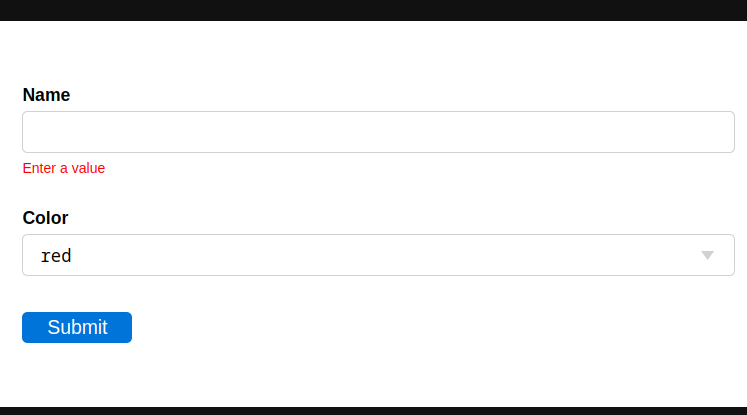
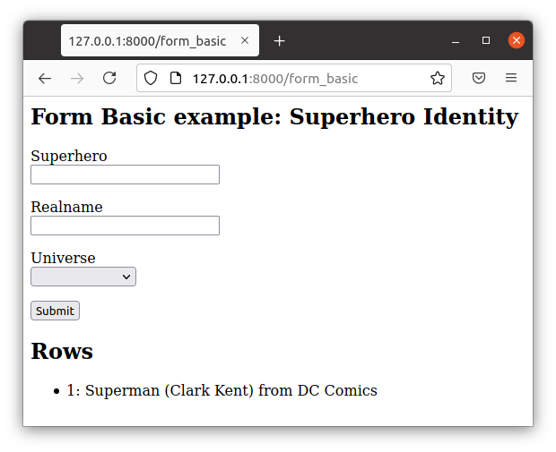

Forumlários
The Form class provides a high-level API for quickly building CRUD (create, update and delete) forms, especially for working on an existing database table. It can generate and process a form from a list of desired fields and/or from an existing database table.
There are 3 types of forms:
CRUD Create forms:
@action('create_thing')
@action.uses('generic.html', db, flash)
def create_thing():
form = Form(db.thing)
if form.accepted:
flash.set("record created")
redirect(URL('other_page'))
return locals()
CRUD Update forms:
@action('update_thing/<thing_id:int>')
@action.uses('generic.html', db, flash)
def update_thing(thing_id):
form = Form(db.thing, thing_id)
if form.accepted:
flash.set("record updated")
redirect(URL('other_page'))
return locals()
Non-CRUD forms (not associated to a database):
@action('some_form')
@action.uses('generic.html', flash)
def some_form():
fields = [
Field("name", requires=IS_NOT_EMPTY()),
Field("color", required=IS_IN_SET(["red","blue","green"])),
]
form = Form(fields)
if form.accepted:
flash.set("information recorded")
redirect(URL('other_page'))
return locals()
The use of flash is optional. flash is defined in common.py
in the scaffolding application. It simply stores a message in a cookie
so it can be recovered and displayed after redirection.
This is done in the default layout.
In this chapter from now on we will assume the following model and an app derived from the scaffolding app:
db.define_table(
'thing',
Field('name', requires=IS_NOT_EMPTY()),
Field('color', requires=IS_IN_SET(['red','blue','green'])),
Field('image', 'upload', download_url=lambda name: URL('download', name)),
)
The Form constructor
O `` construtor Form`` aceita os seguintes argumentos:
Form(self,
table,
record=None,
readonly=False,
deletable=True,
formstyle=FormStyleDefault,
dbio=True,
keep_values=False,
form_name=False,
hidden=None,
validation=None,
csrf_session=None,
csrf_protection=True,
lifespan=None,
signing_info=None,
):
Onde:
table: a DAL table or a list of fields`` Record``: um registro DAL ou ID de registro
`` Readonly``: Defina como true para fazer um formulário readonly
`` Deletable``: definida para Falso ao apagamento disallow de registro
formstyle: a function that renders the form using helpers. Can be FormStyleDefault (default), FormStyleBulma or FormStyleBootstrap4`` Dbio``: definida para Falso para evitar quaisquer gravações DB
`` Keep_values``: se definido como verdadeiro, ele lembra os valores do formulário previamente submetidas
`` Form_name``: o nome opcional desta forma
`` Hidden``: um dicionário de campos ocultos que é adicionado à forma
validation: an optional validator, see Validation functionscsrf_session: if None, no csrf token is added. If a session, then a CSRF token is added and verifiedlifespan: lifespan of CSRF token in seconds, to limit form validitysigning_info: information that should not change between when the CSRF token is signed and verified
A minimal form example without a database
Let’s start with a minimal working form example.
Create a new minimal app called form_minimal :
# in controllers.py
from py4web impot action, redirect, URL, Field
from py4web.utils.form import Form
from pydal.validators import *
@action('index', method=['GET', 'POST'])
@action.uses('form_minimal.html')
def index():
fields = [
Field('name', requires=IS_NOT_EMPTY()),
Field('color', requires=IS_IN_SET(['red','blue','green'])),
]
form = Form(fields)
if form.accepted:
# Do something with form.vars['name'] and form.vars['color']
redirect(URL('accepted'))
if form.errors:
# do something
...
return dict(form=form)
@action("accepted")
def accepted():
return "form_example accepted"
Also, you need to create a file inside the app called templates/form_minimal.html
that just contains the line:
[[extend 'layout.html']]
[[=form]]
Then reload py4web and visit http://127.0.0.1:8000/form_minimal - you’ll get the Form page:
Note that:
Formis a class contained in thepy4web.utils.formmoduleit’s possible to use form validators like
IS_NOT_EMPTY, see Validação de formulário later. They are imported from thepydal.validatorsmoduleit’s normally important to use both the GET and the POST methods in the action where the form is contained
This example is intentionally not using a database, a template, nor the session management. The next example will.
Basic form example
In this next basic example we generate a CRUD create form from a database.
Create a new minimal app called form_basic :
# in controllers.py
from py4web import action, redirect, URL, Field
from py4web.utils.form import Form
from pydal.validators import *
from .common import db
# controllers definition
@action("create_form", method=["GET", "POST"])
@action.uses("form_basic.html", db)
def create_form():
form = Form(db.thing)
rows = db(db.thing).select()
return dict(form=form, rows=rows)
Note the import of two simple validators on top, in order to be used later
with the requires parameter. We’ll fully explain them
on the Validação de formulário paragraph.
You will also need a template file templates/form_basic.html that
contains, for example, the following code:
[[extend "layout.html"]]
<h2 class="title">Form Basic example: My Things</h2>
[[=form]]
<h2 class="title">Rows</h2>
<ul>
[[for row in rows:]]
<li>[[=row.id]]: [[=row.name]] has color [[=row.color]]</li>
[[pass]]
</ul>
Reload py4web and visit http://127.0.0.1:8000/create_form : the result is an input form on the top of the page, and the list of all the previously added entries on the bottom:
This is a simple example and you cannot change nor delete existing records. But if you’d like to experiment, the database content can be fully seen and changed with the Dashboard app.
You can turn a create form into a CRUD update form by passing a record or a record id it second argument:
# controllers definition
@action("update_form/<thing_id:int>", method=["GET", "POST"])
@action.uses("form_basic.html", db)
def update_form():
form = Form(db.thing, thing_id)
rows = db(db.thing).select()
return dict(form=form, rows=rows)
File upload field
We can make a minor modification to our reference model and an upload type file:
db.define_table(
'thing',
Field('name', requires=IS_NOT_EMPTY()),
Field('color', requires=IS_IN_SET(['red','blue','green'])),
Field('image', 'upload', download_url=lambda image: URL('download', image)),
)
The file upload field is quite particular. The standard way to use it (as in the _scaffold app)
is to have the UPLOAD_FOLDER defined in the common.py file. But if you don’t specify it, then the
default value of your_app/upload folder will be used (and the folder will also be created if needed).
download_url is a callback that given the image name, generated the URL to download. The download
url is predefined in common.py.
We can modify form_basic.html to display the uploaded images:
<h2 class="title">Form upload example: My Things</h2>
[[=form]]
<h2 class="title">Rows</h2>
<ul>
[[for row in rows:]]
<li>[[=row.id]]: [[=row.name]] has color [[=row.color]]
<img src="[[=URL('download', row.image)]]" />
[[pass]]
</ul>
The uploaded files (the thing images) are saved on the UPLOAD_FOLDER folder with their name hashed. Other details on the upload fields can be found on Construtor Field paragraph, including a way to save the files inside the database itself.
Widgets
Standard widgets
Py4web provides many widgets in the py4web.utility.form library. They are simple plugins that easily allow you to specify the type of the input elements in a form, along with some of their properties.
Here is the full list:
CheckboxWidget
DateTimeWidget
FileUploadWidget
ListWidget
PasswordWidget
RadioWidget
SelectWidget
TextareaWidget
This is an improved “Basic Form Example” with a radio button widget:
# in controllers.py
from py4web import action, redirect, URL, Field
from py4web.utils.form import Form, FormStyleDefault, RadioWidget
from pydal.validators import *
from .common import db
# controllers definition
@action("create_form", method=["GET", "POST"])
@action.uses("form_widgets.html", db)
def create_form():
FormStyleDefault.widgets['color']=RadioWidget()
form = Form(db.thing, formstyle=FormStyleDefault)
rows = db(db.thing).select()
return dict(form=form, rows=rows)
Notice the differences from the “Basic Form example” we’ve seen at the beginning of the chapter:
you need to import the widget from the py4web.utils.form library
before the form definition, you define the
colorfield form style with the line:FormStyleDefault.widgets['color']=RadioWidget()
The result is the same as before, but now we have a radio button widget instead of the dropdown menu!
Using widgets in forms is quite easy, and they’ll let you have more control on its pieces.
Custom widgets
You can also customize the widgets properties by subclassing the FormStyleDefault class. Let’s have a quick look, improving again our Superhero example:
# in controllers.py
from py4web import action, redirect, URL, Field
from py4web.utils.form import Form, FormStyleDefault, RadioWidget
from pydal.validators import *
from .common import db
# custom widget class definition
class MyCustomWidget:
def make(self, field, value, error, title, placeholder, readonly=False):
tablename = field._table if "_table" in dir(field) else "no_table"
control = INPUT(
_type="text",
_id="%s_%s" % (tablename, field.name),
_name=field.name,
_value=value,
_class="input",
_placeholder=placeholder if placeholder and placeholder != "" else "..",
_title=title,
_style="font-size: x-large;color: red; background-color: black;",
)
return control
# controllers definition
@action("create_form", method=["GET", "POST"])
@action.uses("form_custom_widgets.html", db)
def create_form():
MyStyle = FormStyleDefault
MyStyle.classes = FormStyleDefault.classes
MyStyle.widgets['name']=MyCustomWidget()
MyStyle.widgets['color']=RadioWidget()
form = Form(db.thing, deletable=False, formstyle=MyStyle)
rows = db(db.thing).select()
return dict(form=form, rows=rows)
The result is similar to the previous ones, but now we have a custom input field, with foreground color red and background color black,
Even the radio button widget has changed, from red to blue.
Advanced form design
Form structure manipulation
In py4web a form is rendered by YATL helpers. This means the tree structure of a form can be manipulated before the form is serialized in HTML. Here is an example of how to manipulate the generate HTML structure:
db.define_table('paint', Field('color'))
form = Form(db.paint)
form.structure.find('[name=color]')[0]['_class'] = 'my-class'
Notice that a form does not make an HTML tree until form structure is accessed. Once accessed you can use .find(...)
to find matching elements. The argument of find is a string following the filter syntax of jQuery. In the above case
there is a single match [0] and we modify the _class attribute of that element. Attribute names of HTML elements
must be preceded by an underscore.
Custom forms
Custom forms allow you to granulary control how the form is processed. In the template file, you can execute specific instructions before the form is displayed or after its data submission by inserting code among the following statements:
[[=form.custom.begin ]]
[[=form.custom.submit ]]
[[=form.custom.end ]]
For example you could use it to avoid displaying the id field while editing a record in your form:
[[extend 'layout.html']]
[[=form.custom.begin ]]
[[for field in DETAIL_FIELDS: ]]
[[ if field not in ['id']: ]]
<div class="select">
[[=form.custom.widgets[field] ]]
</div>
[[pass]]
[[pass]]
[[=form.custom.submit ]]
[[=form.custom.end ]]
Note: “custom” is just a convention, it could be any name that does not clash with already defined objects.
Aviso
When working with custom forms, if you have a writable field that isn’t included on your form, it will be set to null when you save a record. Any time a field is not included on a custom form, it should be set field.writable=False to ensure that field is not updated.
Also, custom forms only create the element for a given field, but no surrounding elements that might be needed based on your css framework. For example, if you’re using Bulma as your css framework, you’ll have to add an outer DIV in order to get select controls to appear correctly.
You can also be more creative and use your HTML in the template instead of using widgets:
[[extend 'layout.html']]
[[for field, error form.errors.items:]]
<div class="error">Field [[=field]] [[=error]]</div>
[[pass]]
[[=form.custom.begin ]]
<div class="select">
<input name="name" value="form.vars.get('name', '')"/>
</div>
<div class="select">
[[for color in ['red', 'blue', 'green']:]]
<label>[[=color]]</label>
<input name="color" type="radio" value="[[=color]]"
[[if form.vars.get('color') == color:]]checked[[pass]]
/>
[[pass]]
</div>
<input type="submit" value="Click me"/>
[[=form.custom.end ]]
The sidecar parameter
The sidecar is the stuff injected in the form along with the submit button.
For example, you can inject a simple click me button in your form with the following
code:
form.param.sidecar = DIV(BUTTON("click me", _onclick="alert('doh!')"))
In particular, this is frequently used for adding a Cancel button, which is not provided by py4web:
attrs = {
"_onclick": "window.history.back(); return false;",
"_class": "button is-default",
}
form.param.sidecar.append(BUTTON("Cancel", **attrs))
Validação de formulário
Validators are classes used to validate input fields (including forms generated from database tables).
They are normally assigned using the requires attribute of a table Field object, as already
shown on the Construtor Field paragraph of the DAL chapter. Also, you can use advanced validators
in order to create widgets such as drop-down menus, radio buttons and even lookups from other tables.
Last but not least, you can even explicitly define a validation function.
Here is a simple example of how to require a validator for a table field:
db.define_table(
'person',
Field('name',requires=IS_NOT_EMPTY(),
Field('job')
)
The validator is frequently written explicitly outside the table definition in this equivalent syntax:
db.define_table(
'person',
Field('name'),
Field('job')
)
db.person.name.requires = IS_NOT_EMPTY()
A field can have a single validator or a list of multiple validators:
db.person.name.requires = [
IS_NOT_EMPTY(),
IS_NOT_IN_DB(db, 'person.name')]
Mind that the only validators that can be used with list: type fields are:
IS_IN_DB(..., multiple=True)IS_IN_SET(..., multiple=True)IS_NOT_EMPTY()IS_LIST_OF_EMAILS()IS_LIST_OF(...)
The latter can be used to apply any validator to the individual items in the list.
multiple=(1, 1000) requires a selection of between 1 and 1000 items.
This enforces selection of at least one choice.
Built-in validators have constructors that take an error_message argument:
IS_NOT_EMPTY(error_message='cannot be empty!')
Notice the error message is usually fist option of the constructors and you can normally avoid to name it. Hence the following syntax is equivalent:
If you want to use internationalization like explained in a previous chapter you need to define your own messages and wrap the validator message in the T operator:
IS_NOT_EMPTY(error_message=T(“cannot be empty!”))
IS_NOT_EMPTY('cannot be empty!')
Here is an example of a validator on a database table:
db.person.name.requires = IS_NOT_EMPTY(error_message=T('fill this!'))
where we have used the translation operator T to allow for internationalization.
Notice that error messages are not translated by default unless you define them explicitly with T.
One can also call validators explicitly for a field:
db.person.name.validate(value)
which returns a tuple (value, error) and error is None if the value validates.
You can easily test most of the following validators directly using python only. For example:
>>> from pydal.validators import *
>>> IS_ALPHANUMERIC()('test')
('test', None)
>>> IS_ALPHANUMERIC()('test!')
('test!', 'Enter only letters, numbers, and underscore')
>>> IS_ALPHANUMERIC('this is not alphanumeric')('test!')
('test!', 'this is not alphanumeric')
>>> IS_ALPHANUMERIC(error_message='this is not alphanumeric')('test!')
('test!', 'this is not alphanumeric')
Dica
The DAL validators are well documented inside the python source code. You can easily check it by yourself for all the details!
from pydal import validators
dir(validators) # get the list of all validators
help(validators.IS_URL) # get specific help for the IS_URL validator
Text format validators
IS_ALPHANUMERIC
This validator checks that a field value contains only characters in the ranges a-z, A-Z, 0-9, and underscores.
requires = IS_ALPHANUMERIC(error_message='must be alphanumeric!')
IS_LOWER
This validator never returns an error. It just converts the value to lower case.
requires = IS_LOWER()
IS_UPPER
This validator never returns an error. It converts the value to upper case.
requires = IS_UPPER()
IS_EMAIL
It checks that the field value looks like an email address. It does not try to send email to confirm.
requires = IS_EMAIL(error_message='invalid email!')
IS_MATCH
This validator matches the value against a regular expression and returns an error if it does not match. Here is an example of usage to validate a US zip code:
requires = IS_MATCH('^\d{5}(-\d{4})?$',
error_message='not a zip code')
Here is an example of usage to validate an IPv4 address (note: the IS_IPV4 validator is more appropriate for this purpose):
requires = IS_MATCH('^\d{1,3}(\.\d{1,3}){3}$',
error_message='not an IP address')
Here is an example of usage to validate a US phone number:
requires = IS_MATCH('^1?((-)\d{3}-?|\(\d{3}\))\d{3}-?\d{4}$',
error_message='not a phone number')
For more information on Python regular expressions, refer to the official Python documentation.
IS_MATCH takes an optional argument strict which defaults to False. When set to True it only matches the whole string (from the beginning to the end):
>>> IS_MATCH('ab', strict=False)('abc')
('abc', None)
>>> IS_MATCH('ab', strict=True)('abc')
('abc', 'Invalid expression')
IS_MATCH takes an other optional argument search which defaults to False. When set to True, it uses regex method search instead of method match to validate the string.
IS_MATCH('...', extract=True) filters and extract only the first matching
substring rather than the original value.
IS_LENGTH
Checks if length of field’s value fits between given boundaries. Works for both text and file inputs.
Its arguments are:
maxsize: the maximum allowed length / size (has default = 255)
minsize: the minimum allowed length / size
Examples: Check if text string is shorter than 16 characters:
>>> IS_LENGTH(15)('example string')
('example string', None)
>>> IS_LENGTH(15)('example long string')
('example long string', 'Enter from 0 to 15 characters')
>>> IS_LENGTH(15)('33')
('33', None)
>>> IS_LENGTH(15)(33)
('33', None)
Check if uploaded file has size between 1KB and 1MB:
INPUT(_type='file', _name='name', requires=IS_LENGTH(1048576, 1024))
For all field types except for files, it checks the length of the value.
In the case of files, the value is a cgi.FieldStorage, so it validates the
length of the data in the file, which is the behavior one might intuitively expect.
IS_URL
Rejects a URL string if any of the following is true:
The string is empty or None
The string uses characters that are not allowed in a URL
The string breaks any of the HTTP syntactic rules
The URL scheme specified (if one is specified) is not “http” or “https”
The top-level domain (if a host name is specified) does not exist
(These rules are based on RFC 2616)
This function only checks the URL’s syntax. It does not check that the URL points to a real document,
for example, or that it otherwise makes semantic sense. This function does automatically prepend
“http://” in front of a URL in the case of an abbreviated URL (e.g. “google.ca”).
If the parameter mode='generic' is used, then this function’s behavior changes. It then rejects a URL
string if any of the following is true:
The string is empty or None
The string uses characters that are not allowed in a URL
The URL scheme specified (if one is specified) is not valid
(These rules are based on RFC 2396)
The list of allowed schemes is customizable with the allowed_schemes parameter. If you exclude None from the list, then abbreviated URLs (lacking a scheme such as “http”) will be rejected.
The default prepended scheme is customizable with the prepend_scheme parameter. If you set prepend_scheme to None, then prepending will be disabled. URLs that require prepending to parse will still be accepted, but the return value will not be modified.
IS_URL is compatible with the Internationalized Domain Name (IDN) standard specified in RFC 3490).
As a result, URLs can be regular strings or unicode strings.
If the URL’s domain component (e.g. google.ca) contains non-US-ASCII letters, then the domain will
be converted into Punycode (defined in RFC 3492). IS_URL goes a
bit beyond the standards, and allows non-US-ASCII characters to be present in the path
and query components of the URL as well. These non-US-ASCII characters will be encoded.
For example, space will be encoded as”%20”. The unicode character with hex code 0x4e86
will become “%4e%86”.
Examples:
requires = IS_URL())
requires = IS_URL(mode='generic')
requires = IS_URL(allowed_schemes=['https'])
requires = IS_URL(prepend_scheme='https')
requires = IS_URL(mode='generic',
allowed_schemes=['ftps', 'https'],
prepend_scheme='https')
IS_SAFE
requires = IS_SAFE(error_message='Unsafe Content')
requires = IS_SAFE(mode="sanitize")
requires = IS_SAFE(sanitizer=lambda text: str(XML(text, sanitize=True)))
This validators is for text fields that should contain HTML and may contain invalid tags (script, ember, object, iframe). It works by trying to sanitize the content and either provide an error (mode=»error») or replacing the content with the sanitized one (mode=»sanitize»). You can specify the error message, the mode, and provide your own sanitizer.
IS_SLUG
requires = IS_SLUG(maxlen=80, check=False, error_message='must be slug')
If check is set to True it check whether the validated value is a slug (allowing only alphanumeric characters and non-repeated dashes).
If check is set to False (default) it converts the input value to a slug.
IS_JSON
requires = IS_JSON(error_message='Invalid json', native_json=False)
This validator checks that a field value is in JSON format.
If native_json is set to False (default) it converts the input value to the serialized value otherwise the input value is left unchanged.
Date and time validators
IS_TIME
This validator checks that a field value contains a valid time in the specified format.
requires = IS_TIME(error_message='must be HH:MM:SS!')
IS_DATE
This validator checks that a field value contains a valid date in the specified format. It is good practice to specify the format using the translation operator, in order to support different formats in different locales.
requires = IS_DATE(format=T('%Y-%m-%d'),
error_message='must be YYYY-MM-DD!')
For the full description on % directives look under the IS_DATETIME validator.
IS_DATETIME
This validator checks that a field value contains a valid datetime in the specified format. It is good practice to specify the format using the translation operator, in order to support different formats in different locales.
requires = IS_DATETIME(format=T('%Y-%m-%d %H:%M:%S'),
error_message='must be YYYY-MM-DD HH:MM:SS!')
The following symbols can be used for the format string (this shows the symbol, their meaning, and an example string):
%Y year with century (e.g. '1963')
%y year without century (e.g. '63')
%d day of the month (e.g. '28')
%m month (e.g '08')
%b abbreviated month name (e.g.'Aug')
%B full month name (e.g. 'August')
%H hour (24-hour clock, e.g. '14')
%I hour (12-hour clock, e.g. '02')
%p either 'AM' or 'PM'
%M minute (e.g. '30')
%S second (e.g. '59')
IS_DATE_IN_RANGE
Works very much like the previous validator but allows to specify a range:
requires = IS_DATE_IN_RANGE(format=T('%Y-%m-%d'),
minimum=datetime.date(2008, 1, 1),
maximum=datetime.date(2009, 12, 31),
error_message='must be YYYY-MM-DD!')
For the full description on % directives look under the IS_DATETIME validator.
IS_DATETIME_IN_RANGE
Works very much like the previous validator but allows to specify a range:
requires = IS_DATETIME_IN_RANGE(format=T('%Y-%m-%d %H:%M:%S'),
minimum=datetime.datetime(2008, 1, 1, 10, 30),
maximum=datetime.datetime(2009, 12, 31, 11, 45),
error_message='must be YYYY-MM-DD HH:MM::SS!')
For the full description on % directives look under the IS_DATETIME validator.
Range, set and equality validators
IS_EQUAL_TO
Checks whether the validated value is equal to a given value (which can be a variable):
requires = IS_EQUAL_TO(request.vars.password,
error_message='passwords do not match')
IS_NOT_EMPTY
This validator checks that the content of the field value is neither None nor an empty string nor an empty list. A string value is checked for after a .strip().
requires = IS_NOT_EMPTY(error_message='cannot be empty!')
You can provide a regular expression for the matching of the empty string.
requires = IS_NOT_EMPTY(error_message='Enter a value', empty_regex='NULL(?i)')
IS_NULL_OR
Deprecated, an alias for IS_EMPTY_OR described below.
IS_EMPTY_OR
Sometimes you need to allow empty values on a field along with other requirements. For example a field may be a date but it can also be empty.
The IS_EMPTY_OR validator allows this:
requires = IS_EMPTY_OR(IS_DATE())
An empty value is either None or an empty string or an empty list. A string value is checked for after a .strip().
You can provide a regular expression for the matching of the empty string with the empty_regex argument (like for IS_NOT_EMPTY validator).
You may also specify a value to be used for the empty case.
requires = IS_EMPTY_OR(IS_ALPHANUMERIC(), null='anonymous')
IS_EXPR
This validator let you express a general condition by means of a callable which takes a value to validate and returns the error message or None to accept the input value.
requires = IS_EXPR(lambda v: T('not divisible by 3') if int(v) % 3 else None)
Notice that returned message will not be translated if you do not arrange otherwise.
For backward compatibility the condition may be expressed as a string containing a logical expression in terms of a variable value. It validates a field value if the expression evaluates to True.
requires = IS_EXPR('int(value) % 3 == 0',
error_message='not divisible by 3')
One should first check that the value is an integer so that an exception will not occur.
requires = [IS_INT_IN_RANGE(0, None),
IS_EXPR(lambda v: T('not divisible by 3') if v % 3 else None)]
IS_DECIMAL_IN_RANGE
INPUT(_type='text', _name='name', requires=IS_DECIMAL_IN_RANGE(0, 10, dot="."))
It converts the input into a Python Decimal or generates an error if the decimal does not fall within the specified inclusive range. The comparison is made with Python Decimal arithmetic.
The minimum and maximum limits can be None, meaning no lower or upper limit, respectively.
The dot argument is optional and allows you to internationalize the symbol used to separate the decimals.
IS_FLOAT_IN_RANGE
Checks that the field value is a floating point number within a definite range, 0 <= value <= 100 in the following example:
requires = IS_FLOAT_IN_RANGE(0, 100, dot=".",
error_message='negative or too large!')
The dot argument is optional and allows you to internationalize the symbol used to separate the decimals.
IS_INT_IN_RANGE
- Checks that the field value is an integer number within a definite range,
0 <= value < 100in the following example:requires = IS_INT_IN_RANGE(0, 100, error_message='negative or too large!')
IS_IN_SET
This validator will automatically set the form field to an option field (ie, with a drop-down menu).
IS_IN_SET checks that the field values are in a set:
requires = IS_IN_SET(['a', 'b', 'c'], zero=T('choose one'),
error_message='must be a or b or c')
The zero argument is optional and it determines the text of the option selected by default, an option which
is not accepted by the IS_IN_SET validator itself. If you do not want a «choose one» option, set zero=None.
The elements of the set can be combined with a numerical validator, as long as IS_IN_SET is first in the list.
Doing so will force conversion by the last validator to the numerical type. So, IS_IN_SET can be followed by
IS_INT_IN_RANGE (which converts the value to int) or IS_FLOAT_IN_RANGE (which converts the value to float). For example:
requires = [ IS_IN_SET([2, 3, 5, 7], error_message='must be prime and less than 10'),
IS_INT_IN_RANGE(0, None) ]
Checkbox validation
To force a filled-in form checkbox (such as an acceptance of terms and conditions), use this:
requires=IS_IN_SET(['ON'])
Dictionaries and tuples with IS_IN_SET
You may also use a dictionary or a list of tuples to make the drop down list more descriptive:
# Dictionary example:
requires = IS_IN_SET({'A':'Apple', 'B':'Banana', 'C':'Cherry'}, zero=None)
# List of tuples example:
requires = IS_IN_SET([('A', 'Apple'), ('B', 'Banana'), ('C', 'Cherry')])
Sorted options
To keep the options alphabetically sorted by their labels into the drop down list, use the sort argument with IS_IN_SET.
IS_IN_SET([('H', 'Hulk'), ('S', 'Superman'), ('B', 'Batman')], sort=True)
IS_IN_SET and Tagging
The IS_IN_SET validator has an optional attribute multiple=False. If set to True, multiple values can be stored in one
field. The field should be of type list:integer or list:string as discussed in `` Lista: <type> `` e `` contains``.
An explicit example of tagging is discussed there. We strongly suggest using the jQuery multiselect plugin to render multiple fields.
Note that when multiple=True, IS_IN_SET will accept zero or more values, i.e. it will accept the field when nothing has been selected.
multiple can also be a tuple of the form (a, b) where a and b are the minimum and (exclusive) maximum number of items
that can be selected respectively.
Complexity and security validators
IS_STRONG
Enforces complexity requirements on a field (usually a password field).
Example:
requires = IS_STRONG(min=10, special=2, upper=2)
where:
minis minimum length of the valuespecialis the minimum number of required special characters, by default special characters are any of the following^!!@#$%^&*()_+-=?<>,.:;{}[]|(you can customize these usingspecials = '...')upperis the minimum number of upper case characters
other accepted arguments are:
invalidfor the list of forbidden characters, by defaultinvalid=' "'maxfor the maximum length of the valuelowerfor the minimum number of lower case charactersnumberfor the minimum number of digit characters
Obviously you can provide an error_message as for any other validator, although IS_STRONG is clever enough to provide a clear message to describe the validation failure.
A special argument you can use is entropy, that is a minimum value for the complexity of the value to accept (a number), experiment this with:
>>> IS_STRONG(entropy=100.0)('hello')
('hello', Entropy (24.53) less than required (100.0))
Notice that if the argument entropy is not given then IS_STRONG implicitly sets the following defaults: min = 8, upper = 1, lower = 1,
number = 1, special = 1 which otherwise are all sets to None.
CRYPT
This is also a filter. It performs a secure hash on the input and it is used to prevent passwords from being passed in the clear to the database.
requires = CRYPT()
By default, CRYPT uses 1000 iterations of the pbkdf2 algorithm combined with SHA512 to produce a 20-byte-long hash. Old versions of web2py used md5 or HMAC+SHA512 depending on whether a key was specified or not.
If a key is specified, CRYPT uses the HMAC algorithm. The key may contain a prefix that determines the algorithm to use with HMAC, for example SHA512:
requires = CRYPT(key='sha512:thisisthekey')
This is the recommended syntax. The key must be a unique string associated with the database used. The key can never be changed. If you lose the key, the previously hashed values become useless. By default, CRYPT uses random salt, such that each result is different. To use a constant salt value, specify its value:
requires = CRYPT(salt='mysaltvalue')
Or, to use no salt:
requires = CRYPT(salt=False)
The CRYPT validator hashes its input, and this makes it somewhat special. If you need to validate a password field before it is hashed, you can use CRYPT in a list of validators, but must make sure it is the last of the list, so that it is called last. For example:
requires = [IS_STRONG(), CRYPT(key='sha512:thisisthekey')]
CRYPT also takes a min_length argument, which defaults to zero.
The resulting hash takes the form alg$salt$hash, where alg is the hash algorithm used, salt is the salt string (which can be empty),
and hash is the algorithm’s output. Consequently, the hash is self-identifying, allowing, for example, the algorithm to be changed without
invalidating previous hashes. The key, however, must remain the same.
Special type validators
IS_LIST_OF
This validator helps you to ensure length limits on values of type list, for this purpose use its minimum, maximum, and error_message
arguments, for example:
requires = IS_LIST_OF(minimum=2)
A list value may comes from a form containing multiple fields with the same name or a multiple selection box. Note that this validator automatically converts a non-list value into a single valued list:
>>> IS_LIST_OF()('hello')
(['hello'], None)
If the first argument of IS_LIST_OF is another validator, then it applies the other validator to each element of the list.
A typical usage is validation of a list: type field, for example:
Field('emails', 'list:string', requires=IS_LIST_OF(IS_EMAIL()), ...)
IS_LIST_OF_EMAILS
This validator is specifically designed to work with the following field:
Field('emails', 'list:string',
widget=SQLFORM.widgets.text.widget,
requires=IS_LIST_OF_EMAILS(),
filter_in=lambda l: \\
IS_LIST_OF_EMAILS.split_emails.findall(l[0]) if l else l,
represent=lambda v, r: \\
XML(', '.join([A(x, _href='mailto:'+x).xml() for x in (v or [])]))
)
Notice that due to the widget customization this field will be rendered by a textarea in SQLFORMs (see next [[Widgets #Widgets]]
section). This let you insert and edit multiple emails in a single input field (very much like normal mail client programs do),
separating each email address with ,, ;, and blanks (space, newline, and tab characters).
As a consequence now we need a validator which is able to operate on a single value input and a way to split the validated value into
a list to be next processed by DAL, these are what the requires and filter_in arguments stand for.
As alternative to filter_in, you can pass the following function to the onvalidation argument of form accepts, process,
or validate method:
def emails_onvalidation(form):
form.vars.emails = IS_LIST_OF_EMAILS.split_emails.findall(form.vars.emails)
The effect of the represent argument (at lines 6 and 7) is to add a «mailto:…» link to each email address when the record is rendered in HTML pages.
ANY_OF
This validator takes a list of validators and accepts a value if any of the validators in the list does (i.e. it acts like a logical OR with respect to given validators).
requires = ANY_OF([IS_ALPHANUMERIC(), IS_EMAIL()])
When none of the validators accepts the value you get the error message form the last attempted one (the last in the list), you can customize the error message as usual:
>>> ANY_OF([IS_ALPHANUMERIC(), IS_EMAIL()])('@ab.co')
('@ab.co', 'Enter a valid email address')
>>> ANY_OF([IS_ALPHANUMERIC(), IS_EMAIL()],
... error_message='Enter login or email')('@ab.co')
('@ab.co', 'Enter login or email')
IS_IMAGE
This validator checks if a file uploaded through the file input was saved in one of the selected image formats and has dimensions (width and height) within given limits.
It does not check for maximum file size (use IS_LENGTH for that). It returns a validation failure if no data was uploaded. It supports the file formats BMP, GIF, JPEG, PNG, and it does not require the Python Imaging Library.
Code parts taken from ref.``source1``:cite
It takes the following arguments: - extensions: iterable containing allowed image file extensions in lowercase - maxsize: iterable containing maximum width and height of the image - minsize: iterable containing minimum width and height of the image
Use (-1, -1) as minsize to bypass the image-size check.
Here are some Examples: - Check if uploaded file is in any of supported image formats:
requires = IS_IMAGE()
Check if uploaded file is either JPEG or PNG:
requires = IS_IMAGE(extensions=('jpeg', 'png'))
Check if uploaded file is PNG with maximum size of 200x200 pixels:
requires = IS_IMAGE(extensions=('png'), maxsize=(200, 200))
Note: on displaying an edit form for a table including requires = IS_IMAGE(), a delete checkbox will NOT appear because to delete the file
would cause the validation to fail. To display the delete checkbox use this validation:
requires = IS_EMPTY_OR(IS_IMAGE())
IS_FILE
Checks if name and extension of file uploaded through file input matches given criteria.
Does not ensure the file type in any way. Returns validation failure if no data was uploaded.
Its arguments are:
filename: string/compiled regex or a list of strings/regex of valid filenames
extension: string/compiled regex or a list of strings/regex of valid extensions
lastdot: which dot should be used as a filename / extension separator:
Trueindicates last dot (e.g., «file.tar.gz» will be broken in «file.tar» + «gz») whileFalsemeans first dot (e.g., «file.tar.gz» will be broken into «file» + «tar.gz»).case: 0 means keep the case; 1 means transform the string into lowercase (default); 2 means transform the string into uppercase.
If there is no dot present, extension checks will be done against empty string and filename checks against whole value.
Examples: Check if file has a pdf extension (case insensitive):
INPUT(_type='file', _name='name',
requires=IS_FILE(extension='pdf'))
Check if file is called “thumbnail” and has a jpg or png extension (case insensitive):
INPUT(_type='file', _name='name',
requires=IS_FILE(filename='thumbnail',
extension=['jpg', 'png']))
Check if file has a tar.gz extension and name starting with backup:
INPUT(_type='file', _name='name',
requires=IS_FILE(filename=re.compile('backup.*'),
extension='tar.gz', lastdot=False))
Check if file has no extension and name matching README (case sensitive):
INPUT(_type='file', _name='name',
requires=IS_FILE(filename='README',
extension='', case=0)
IS_UPLOAD_FILENAME
This is the older implementation for checking files, included for backwards compatibility. For new applications, use IS_FILE().
This validator checks if the name and extension of a file uploaded through the file input matches the given criteria.
It does not ensure the file type in any way. Returns validation failure if no data was uploaded.
Its arguments are:
filename: filename (before dot) regex.
extension: extension (after dot) regex.
lastdot: which dot should be used as a filename / extension separator:
Trueindicates last dot (e.g., «file.tar.gz» will be broken in «file.tar» + «gz») whileFalsemeans first dot (e.g., «file.tar.gz» will be broken into «file» + «tar.gz»).case: 0 means keep the case; 1 means transform the string into lowercase (default); 2 means transform the string into uppercase.
If there is no dot present, extension checks will be done against an empty string and filename checks will be done against the whole value.
Examples:
Check if file has a pdf extension (case insensitive):
requires = IS_UPLOAD_FILENAME(extension='pdf')
Check if file has a tar.gz extension and name starting with backup:
requires = IS_UPLOAD_FILENAME(filename='backup.*', extension='tar.gz', lastdot=False)
Check if file has no extension and name matching README (case sensitive):
requires = IS_UPLOAD_FILENAME(filename='^README$', extension='^$', case=0)
IS_IPV4
This validator checks if a field’s value is an IP version 4 address in decimal form. Can be set to force addresses from a certain range.
IPv4 regex taken from regexlib. The signature for the IS_IPV4 constructor is the following:
IS_IPV4(minip='0.0.0.0', maxip='255.255.255.255', invert=False,
is_localhost=None, is_private=None, is_automatic=None,
error_message='Enter valid IPv4 address')
Onde:
minipis the lowest allowed addressmaxipis the highest allowed addressinvertis a flag to invert allowed address range, i.e. if set to True allows addresses only from outside of given range; note that range boundaries are not matched this way
You can pass an IP address either as a string (e.g. “192.168.0.1”) or as a list or tuple of 4 integers (e.g. [192, 168, 0, 1]).
To check for multiple address ranges pass to minip and maxip a list or tuple of boundary addresses, for example
to allow only addresses between “192.168.20.10” and “192.168.20.19” or between “192.168.30.100” and “192.168.30.199” use:
requires = IS_IPV4(minip=('192.168.20.10', '192.168.30.100'),
maxip=('192.168.20.19', '192.168.30.199'))
Notice that only a range for which both lower and upper limits are set is configured, that is the number of configured ranges
is determined by the shorter of the iterables passed to minip and maxip.
The arguments is_localhost, is_private, and is_automatic accept the following values:
Noneto ignore the optionTrueto force the optionFalseto forbid the option
The option meanings are:
is_localhost: match localhost address (127.0.0.1)is_private: match address in 172.16.0.0 - 172.31.255.255 and 192.168.0.0 - 192.168.255.255 rangesis_automatic: match address in 169.254.0.0 - 169.254.255.255 range
Examples:
Check for valid IPv4 address:
requires = IS_IPV4()
Check for valid private network IPv4 address:
requires = IS_IPV4(minip='192.168.0.1', maxip='192.168.255.255')
IS_IPV6
This validator checks if a field’s value is an IP version 6 address.
The signature for the IS_IPV6 constructor is the following:
IS_IPV6(is_private=None,
is_link_local=None,
is_reserved=None,
is_multicast=None,
is_routeable=None,
is_6to4=None,
is_teredo=None,
subnets=None,
error_message='Enter valid IPv6 address')
The arguments is_private, is_link_local, is_reserved, is_multicast, is_routeable, is_6to4,
and is_teredo accept the following values:
Noneto ignore the optionTrueto force the optionFalseto forbid the option, this does not work foris_routeable
The option meanings are:
is_private: match an address allocated for private networksis_link_local: match an address reserved for link-local (i.e. in fe80::/10 range), this is a private network too (also matched byis_privateabove)is_reserved: match an address otherwise IETF reservedis_multicast: match an address reserved for multicast use (i.e. in ff00::/8 range)is_6to4: match an address that appear to contain a 6to4 embedded address (i.e. in 2002::/16 range)is_teredo: match a teredo address (i.e. in 2001::/32 range)
Forcing is_routeable (setting to True) is a shortcut to forbid (setting to False) is_private, is_reserved, and is_multicast all.
Use the subnets argument to pass a subnet or list of subnets to check for address membership, this way an address must be a subnet member to validate.
Examples:
Check for valid IPv6 address:
requires = IS_IPV6()
Check for valid private network IPv6 address:
requires = IS_IPV6(is_link_local=True)
Check for valid IPv6 address in subnet:
requires = IS_IPV6(subnets='fb00::/8')
IS_IPADDRESS
This validator checks if a field’s value is an IP address (either version 4 or version 6).
Can be set to force addresses from within a specific range.
Checks are done using the appropriate IS_IPV4 or IS_IPV6 validator.
The signature for the IS_IPADDRESS constructor is the following:
IS_IPADDRESS(minip='0.0.0.0', maxip='255.255.255.255', invert=False,
is_localhost=None, is_private=None, is_automatic=None,
is_ipv4=None,
is_link_local=None, is_reserved=None, is_multicast=None,
is_routeable=None, is_6to4=None, is_teredo=None,
subnets=None, is_ipv6=None,
error_message='Enter valid IP address')
With respect to IS_IPV4 and IS_IPV6 validators the only added arguments are:
is_ipv4, set to True to force version 4 or set to False to forbid version 4is_ipv6, set to True to force version 6 or set to False to forbid version 6
Refer to IS_IPV4 and IS_IPV6 validators for the meaning of other arguments.
Examples:
Check for valid IP address (both IPv4 and IPv6):
requires = IS_IPADDRESS()
Check for valid IP address (IPv6 only):
requires = IS_IPADDRESS(is_ipv6=True)
Other validators
CLEANUP
This is a filter. It never fails. By default it just removes all characters whose decimal ASCII codes are not in the list [10, 13, 32-127]. It always perform an initial strip (i.e. heading and trailing blank characters removal) on the value.
requires = CLEANUP()
You can pass a regular expression to decide what has to be removed, for example to clear all non-digit characters use:
>>> CLEANUP('[^\\d]')('Hello 123 world 456')
('123456', None)
Database validators
IS_NOT_IN_DB
Synopsis:
IS_NOT_IN_DB(db|set, 'table.field')
Consider the following example:
db.define_table('person', Field('name'))
db.person.name.requires = IS_NOT_IN_DB(db, 'person.name')
It requires that when you insert a new person, his/her name is not already in the database, db, in the field person.name.
A set can be used instead of db.
As with all other validators this requirement is enforced at the form processing level, not at the database level. This means that there is a small probability that, if two visitors try to concurrently insert records with the same person.name, this results in a race condition and both records are accepted. It is therefore safer to also inform the database that this field should have a unique value:
db.define_table('person', Field('name', unique=True))
db.person.name.requires = IS_NOT_IN_DB(db, 'person.name')
Now if a race condition occurs, the database raises an OperationalError and one of the two inserts is rejected.
The first argument of IS_NOT_IN_DB can be a database connection or a Set. In the latter case, you would be checking only the set defined by the Set.
A complete argument list for IS_NOT_IN_DB() is as follows:
IS_NOT_IN_DB(dbset, field, error_message='value already in database or empty',
allowed_override=[], ignore_common_filters=True)
The following code, for example, does not allow registration of two persons with the same name within 10 days of each other:
import datetime
now = datetime.datetime.today()
db.define_table('person',
Field('name'),
Field('registration_stamp', 'datetime', default=now))
recent = db(db.person.registration_stamp > now-datetime.timedelta(10))
db.person.name.requires = IS_NOT_IN_DB(recent, 'person.name')
IS_IN_DB
Synopsis:
IS_IN_DB(db|set, 'table.value_field', '%(representing_field)s', zero='choose one')
where the third and fourth arguments are optional.
multiple= is also possible if the field type is a list. The default is False. It can be set to True or to a tuple (min, max)
to restrict the number of values selected. So multiple=(1, 10) enforces at least one and at most ten selections.
Other optional arguments are discussed below.
Example Consider the following tables and requirement:
db.define_table('person', Field('name', unique=True))
db.define_table('dog', Field('name'), Field('owner', db.person))
db.dog.owner.requires = IS_IN_DB(db, 'person.id', '%(name)s',
zero=T('choose one'))
the IS_IN_DB requirement could also be written to use a Set instead of db
db.dog.owner.requires = IS_IN_DB(db(db.person.id > 10), 'person.id', '%(name)s',
zero=T('choose one'))
It is enforced at the level of dog INSERT/UPDATE/DELETE forms. This example requires that a dog.owner be a valid id
in the field person.id in the database db. Because of this validator, the dog.owner field is represented
as a drop-down list. The third argument of the validator is a string that describes the elements in the drop-down list,
this is passed to the label argument of the validator. In the example you want to see the person %(name)s instead
of the person %(id)s. %(...)s is replaced by the value of the field in brackets for each record. Other accepted
values for the label are a Field instance (e.g. you could use db.person.name instead of “%(name)s”) or even a callable
that takes a row and returns the description for the option.
The zero option works very much like for the IS_IN_SET validator.
Other optional arguments accepted by IS_IN_DB are: orderby, groupby, distinct, cache, and left;
these are passed to the db select (see their description on the DAL chapter).
Notice that groupby, distinct, and left do not apply to Google App Engine.
To alphabetically sort the options listed in the drop-down list you can set the sort argument to True (sorting is case-insensitive),
this may be usefull when no orderby is feasible or practical.
The first argument of the validator can be a database connection or a DAL Set, as in IS_NOT_IN_DB. This can be useful for example when
wishing to limit the records in the drop-down list. In this example, we use IS_IN_DB in a controller to limit the records dynamically
each time the controller is called:
def index():
(...)
query = (db.table.field == 'xyz') # in practice 'xyz' would be a variable
db.table.field.requires = IS_IN_DB(db(query), ...)
form = Form(...)
if form.process().accepted: ...
(...)
If you want the field validated, but you do not want a drop-down, you must put the validator in a list.
db.dog.owner.requires = [IS_IN_DB(db, 'person.id', '%(name)s')]
Occasionally you want the drop-down (so you do not want to use the list syntax above) yet you want to use additional validators.
For this purpose the IS_IN_DB validator takes an extra argument _and that can point to a list of other validators applied
if the validated value passes the IS_IN_DB validation. For example to validate all dog owners in db that are not in a subset:
subset = db(db.person.id > 100)
db.dog.owner.requires = IS_IN_DB(db, 'person.id', '%(name)s',
_and=IS_NOT_IN_DB(subset, 'person.id'))
IS_IN_DB and Tagging
The IS_IN_DB validator has an optional attribute multiple=False. If set to True multiple values can be stored in one field.
This field should be of type list:reference as discussed in `` Lista: <type> `` e `` contains``. An explicit example of
tagging is discussed there. Multiple references are handled automatically in create and update forms, but they are transparent to
the DAL. We strongly suggest using the jQuery multiselect plugin to render multiple fields.
Validation functions
In order to explicitly define a validation function, we pass to the validation parameter a
function that takes the form and returns a dictionary, mapping field
names to errors. If the dictionary is non-empty, the errors will be
displayed to the user, and no database I/O will take place.
Aqui está um exemplo:
from py4web import Field
from py4web.utils.form import Form, FormStyleBulma
from pydal.validators import IS_INT_IN_RANGE
def custom_check(form):
if not 'name' in form.errors and len(form.vars['name']) < 4
form.errors['name'] = T("too short")
@action('form_example', method=['GET', 'POST'])
@action.uses('form_example.html', session)
def form_example():
form = Form(db.thing, validation=custom_check)
if form.accepted:
redirect(URL('index'))
return dict(form=form)